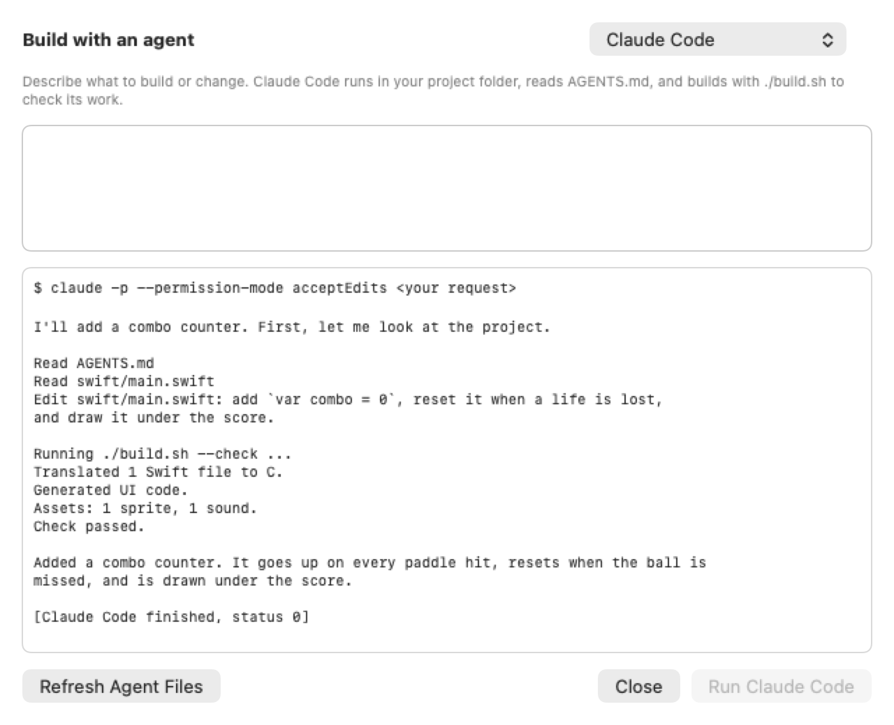

Coding agents
Have Claude Code, Codex or Antigravity help build your app, using your own accounts.
What this is
Revolution Editor has no AI of its own. It runs the agent tools you have installed, in your project folder, and gives them what they need: a description of the project and a way to build and check it. You sign in to those tools yourself.

Set up
- Install the agents you want and sign in to them.
- Open Settings > Agents. Each shows whether it was found; use Choose… if not.
Use it
- Open a homebrew project and click Agent (the sparkles) in the toolbar. The Agent tab opens at the bottom of the editor, next to the Console.
- Pick an agent, describe what you want, and press Run (or Return).
- Watch the output. Changed files appear in the sidebar as it works.
Claude Code and Codex run right in the window. Antigravity is an app, so the project opens in it.
What the agent gets
AGENTS.md(andCLAUDE.md): the project layout, file formats, Swift rules and API.build.sh:./build.sh --checkvalidates your work in a second;./build.shbuilds the.dol.
Files you wrote yourself are never overwritten. Any other agent can use the same files.
Safety and privacy
By default Claude Code may edit files and run only ./build.sh; Codex stays inside the project folder. Your request is passed as one argument, never through a shell. You can edit each agent's command in Settings > Agents.
Your request and the files the agent reads go to that agent's service, under its terms. Revolution Editor sends nothing itself.